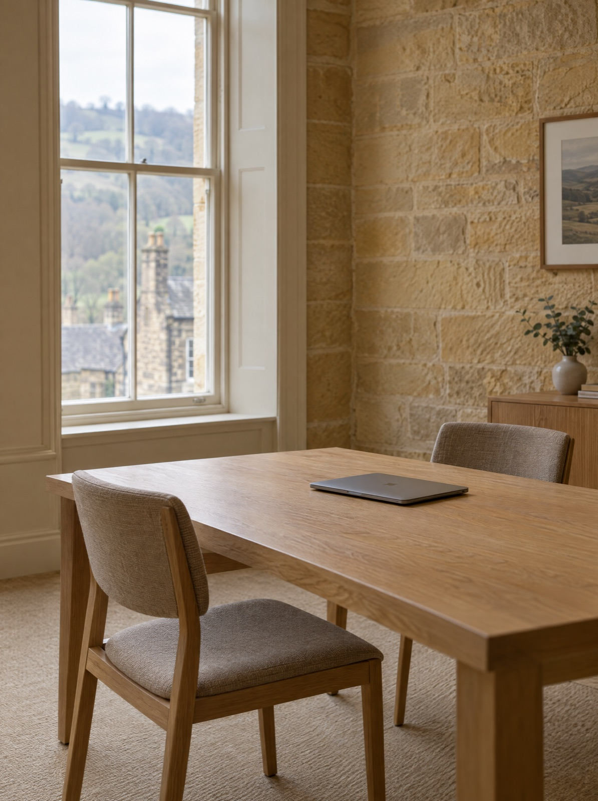

Project Management
Providing project management services to clients including project planning, resource management, risk analysis, and tracking and monitoring budgets.
Learn moreFormed in 2000, our consultancy has provided services to a global client base. We believe that clients ultimately want solutions and not just reports after engaging the services of consultants. They want and should demand a service that goes one step further.
Systems we implement and support
Your finance system is holding the business back, and the last engagement left you with a report rather than a working answer.
We specialise in the delivery of consultancy services and systems integration solutions, with a key focus on accounting and finance systems.
You run on finance systems that deliver strategic and functional solutions, with reporting your board can rely on.

JD Placeholder — photograph of Jason requiredManaging Director
Jason founded JMD Consulting in January 2000 to provide consulting services to a wide range of clients across a broad range of vertical markets, building on CODA/Unit4 Financials® experience dating to 1990.
“We are committed to making sure that our clients receive more than just a good service. We aim to make sure that the service they receive, delivers a solution. In short a ‘Solution Service’.”
Based in Harrogate in the North Yorkshire countryside, we are able to travel to clients anywhere across the globe.
Contact usWhether you are implementing a new finance system, migrating off a legacy one, or making the reporting you already have tell the truth — there is a route for you.
Providing project management services to clients including project planning, resource management, risk analysis, and tracking and monitoring budgets.
Learn moreOffering experience of ERP Implementations with a proven track record of delivering complex multi-currency, multi-company and multi-site ERP financial reporting systems.
Learn moreBusiness intelligence expertise, developing complex financial reports and KPIs. Migrating financial data from legacy systems, data analysis, development of SQL scripts and stored procedures.
Learn moreConsultancy and support since 1990. Knowledge and experience gained from providing real world consultancy whilst employed by CODA®, followed by independent consultancy since 2000.
Learn moreTell us where the system is failing and we will tell you what it takes to fix it. We work on site across the UK and internationally, or connect remotely to your servers and desktop devices.
Call +44 (0) 1423 884000Or email info@jmdconsulting.co.uk
Since 1990
CODA / Unit4 Financials® consultancy and support, first inside CODA® and independently since 2000.
Circa 100 clients
Worldwide, across a broad range of vertical markets, since commencement in January 2000.
Four continents
Servicing clients throughout the UK, Europe, the USA and Canada, and the Middle East.